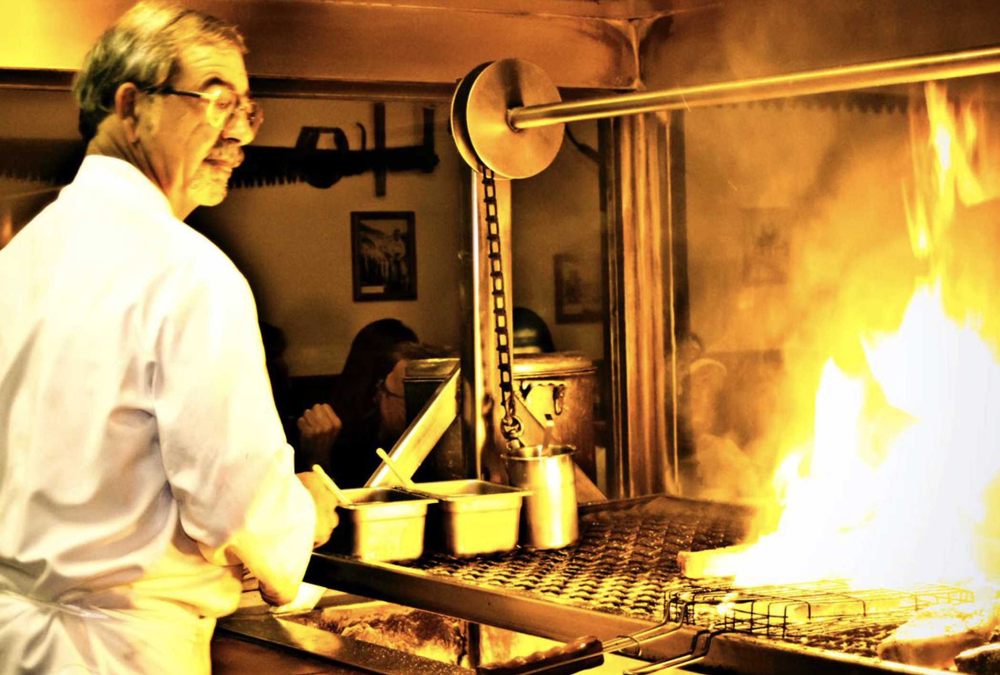
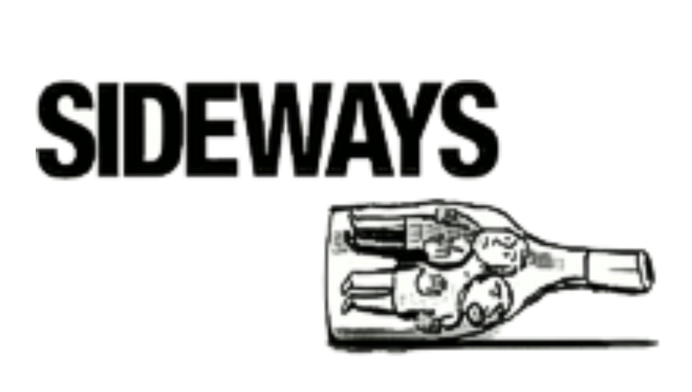

Brought to perfection by pioneers. Serving choice, aged beef over open live-oak fires in a 100-year-old historic building.
Your Hosts: The Ostini Family

Casmalia, California, a former cow-town of the Old West, is where California-style barbequeing was brought to perfection. The Hitching Post brings this live-oak BBQ to perfection, bringing choice, aged beef to the ultimate gourmet flavor and tenderness.
Open-fire barbecue at its very highest level.
Top ratings and reviews from our community and Google listings.
"The atmosphere is classic, warm, and completely unpretentious. Red tablecloths, a lively dining room, and the open grill with steaks cooking over live fire gave the whole place a timeless charm. The filet was tender and buttery, while the ribeye was rich, juicy, and packed with flavor!"
— Google Reviewer
"What really makes this place stand out is everything included with dinner. The meal started with their classic relish tray, followed by shrimp cocktail and a fresh salad, ending with ice cream. It's a complete dining experience that reminds you why legendary steakhouses become institutions."
— Google Reviewer
"An absolute landmark. If you love traditional steakhouses, live-fire cooking, and authentic California road-trip dining, the Hitching Post absolutely lives up to its reputation. One of the most memorable meals we've had in a long time!"
— Google Reviewer

The Academy Award-winning film Sideways by Alexander Payne features the wines of our area. While set at our brother restaurant Hitching Post 2 in Buellton, our family and wines are deeply tied to the movie's legacy!
Featured together as one of "10 Great BBQ Joints in the USA", noted as a bridge between Argentinean parillada cooking and Southern barbecue—making these among the finest steakhouses in the country.